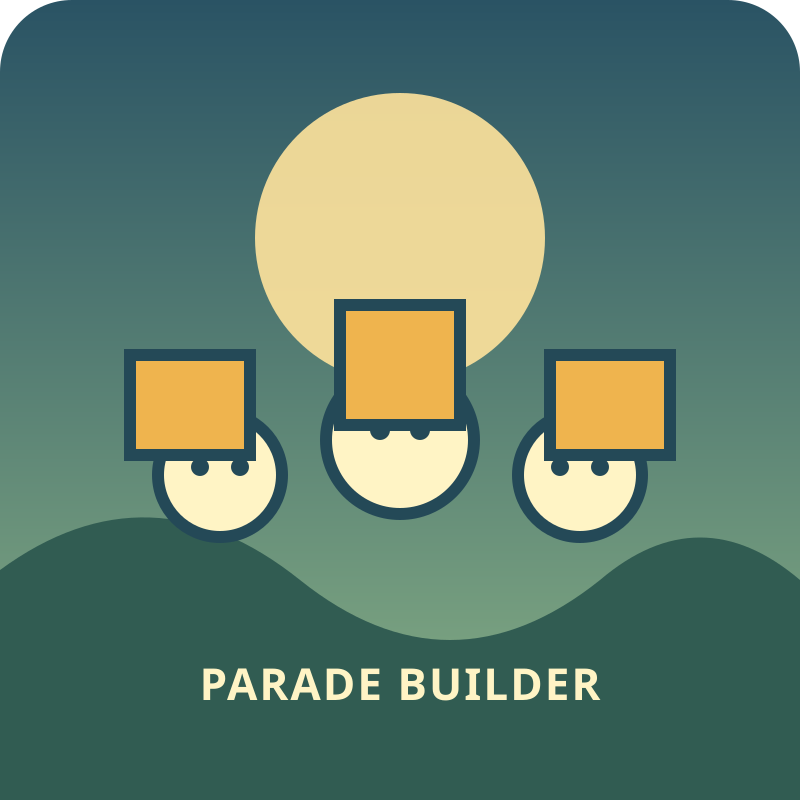

Forest route · 3+
Animal Parade Builder
Choose the gate that matches each animal's trail. Plan the order, recover from a wrong turn, and bring the whole parade home.

Forest route · 3+
Choose the gate that matches each animal's trail. Plan the order, recover from a wrong turn, and bring the whole parade home.

Read the animal clue, then choose the matching gate. A wrong gate gives a calm hint and leaves the route open; four correct gates complete the parade.
Match the clue to a gate.
Route complete